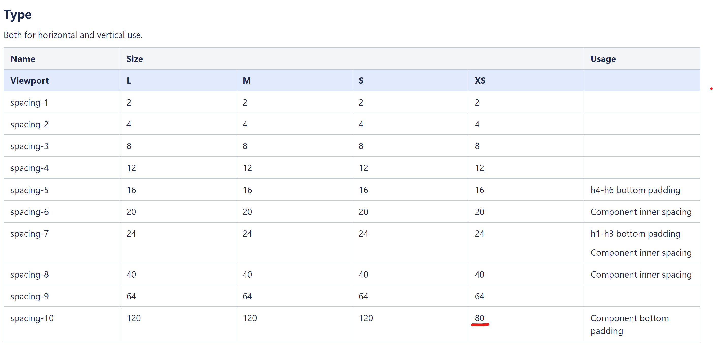
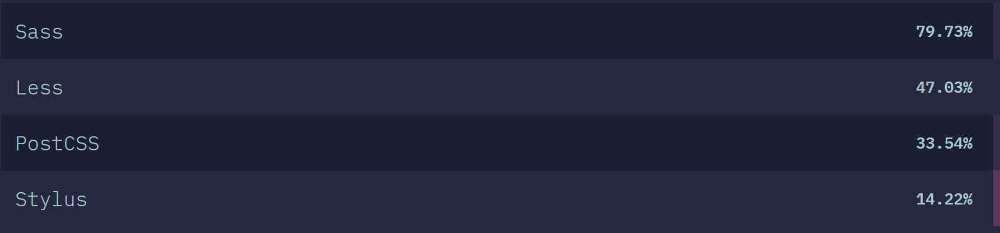
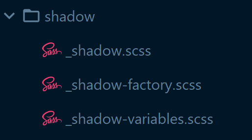

Branding / Theming
@
Agenda
- Pre-styleguide
- Styleguide in design
- Styleguide in code
- Branding/Theming
Pre-styleguide

Pre-styleguide
No system
- Low visual consistency
- Unmanaged growth in styles (buttons, colors, margins, ...)
- No one guarded the brand styling
"Look on my Works, ye Mighty, and despair!"
"Ozymandias" by Percy Bysshe Shelley
@grey1: #efeff4;
@grey2: #e0e0e0;
@grey3: #ccced8;
@grey4: #b9bbc7;
@grey5: #888b9c;
@grey6: #5d6678;
@grey7: #3c3c3c;
@grey8: #666666;
@grey9: #242e47;
@grey10: #cccccc;
@grey11: #999999;
@grey12: #cccedb;
@grey13: #333333;
@grey14: #e3e1e1;
@grey15: #e6e6e6;
@grey16: #f7f7f9; // used in button-flyout.less
@grey17: #3c3c3c; // used in forms.less
@grey18: #c2c4cf; // used in icon.less
@grey19: #eaeaed; // used in icon.less
@grey20: #ececef; // used in icon.less
...
@grey21: #e7e7e7; // used in live-chat.less
@grey22: #a9acba; // used in live-chat.less
@grey23: #d8d8d8; // used in live-chat.less
@grey24: #cfd0d4; // used in live-chat.less
@grey25: #3f3f3f; // used in magnific-popup.less
@grey26: #444444; // used in magnific-popup.less
@grey27: #bdbdbd; // used in magnific-popup.less
@grey28: #f3f3f3; // used in magnific-popup.less
@grey29: #dadada; // used in popup.less (@popup-gradient-1)
@grey30: #f2f2f2; // used in popup.less (@popup-gradient-2)
@grey31: #bbbbbb; // used in popup.less (@popup-content-ie8)
@grey32: #252525; // used in rangeslider.less
@grey33: #cdddbc; // used in rate.less
@grey34: #888888; // used in tooltip.less
@grey35: #c1c3ce; // used in video-no-fullscreen.less
@grey36: #eeeef0; // used in button-flyout.less
@grey37: #fcfcfc; // used in thumbstrip.less
@grey38: #2f2f2f; // latest grey color coming from Philips Design
@grey39: #f5f4f4;
@grey40: #a6a6a6; // dark grey for filter used in d77v2-product-finder-for-category.less
// COLORS
@blue1: #72b5cc;
@blue2: #0089c4;
@blue3: #005a8b;
@blue4: #0039a6;
@blue5: #0b2265;
@blue6: #d3deed; // (very very light color)
@blue7: #b3c8e6; // VERY LIGHT blue
@blue8: #7ba4d9; // LIGHT blue
@blue9: #0066a1; // BRIGHT blue
@blue10: #003478; // DARK blue
@blue11: #0f204b; // VERY DARK blue
@blue12: #09142e;
@blue13: #d9edf6; // used in accordion.less (@accordion-background), box.less (@box-lightcolored-background)
// @blue14 - no longer used
@blue15: #003FA5; // used in buttons.less (@button-border)
@blue16: #0449B4; // used in buttons.less (@button-border-left)
@blue17: #568FE4; // used in buttons.less (@button-shadow)
// @blue18 - no longer used
@blue19: #000034; // used in controls.less
@blue20: #86afeb; // used in forms.less (@form-border-focus)
@blue21: #0073b4; // used in icons.less (@icon-wrapper-hover)
@blue22: #0e5fd8; // used in live-chat.less (@live-chat-name)
@blue23: #9298A2; // used in video.less (@video-mute-background)
@blue24: #0b5ed7; // used in promotions.less (@promotion-retour)
@blue25: #bec0ca; // used in thumbstrip.less (@thumbstrip-overflow-background)
@blue26: #f2f9fc; // used in checkbox.less
@blue27: #80b3d0; // used in checkbox.less
@blue28: #d9edf6; // used as hover in sticky nav
...
This goes on...
for 600 more lines...

Leads to undescriptive, unclear code
&.p-empty {
.p-product-title{
background-color: @color13;
padding: 10px 0 0;
font-size: 12px;
color: @grey5;
}
}
Styleguide in design
- Start of 2018: Zeplin

- Start of 2019: conversion to Confluence
Zeplin
Confluence
InvisionStyleguide in design
Advantages
- Consistency
- Clarity in design & development
- Maintainability increases
- A lot less complex
Disadvantages
- Guarding complexity requires discipline!
- Normalizing loose pixel values
- A sense of ownership needed
Resonsponsive spacings ?
Styleguide in code
Styleguide in code
Disclaimer
This is A way
Not THE way
Styleguide in code
From static class list to dynamically generated
From
Styleguide in code
Why  ?
?
- Locked on an old version of LESS (1.4)
- Most popular begining of 2018
- Out-of-the-box sensible methods
(mixins, functions, lists) - More stackoverflow articles/examples
- Documentation clearer
Styleguide in code

(2019.stateofcss.com)
Styleguide in code
- Generated styleguide
- Styleguide sections
(typography, fonts, spacings, links, ...) - "Root, factory, variables" pattern
- Webpack postcss plugins: autoprefixer en cssnano
"Root, factory, variables"
Structuur:

Variables
// _shadows-variables.css
@import '../color/color-variables';
$shadows: (
shadow-0: none,
shadow-1: (0 4px 8px 0 #{rgba($ui-color-shadow-black, .16)}, 0 1px 2px 0 #{rgba($ui-color-shadow-black, .32)}),
shadow-2: (0 6px 12px 0 #{rgba($ui-color-shadow-black, .24)}, 0 1.5px 3px 0 #{rgba($ui-color-shadow-black, .32)}),
) !default;
- In SCSS maps, so dynamic amount
!default: overwritable at any point
Variables
// Cardinality // t-shirt sizes
$shadows: ( $shadows: (
shadow-0: ..., shadow-xs: ...,
shadow-1: ..., shadow-s: ...,
shadow-2: ..., shadow-m: ...,
shadow-3: ..., shadow-l: ...,
shadow-4: ..., shadow-xl: ...,
shadow-5: ..., shadow-xxl: ...,
shadow-6: ..., shadow-xxxl: ...,
shadow-7: ..., shadow-xxxxl: ...,
) !default;
- Cardinality over T-Shirt sizes because of longer lists
- Refactors are painful in any case
Factory
// _shadow-factory.css
@import 'shadow-variables';
@mixin generate-shadow($shadow-level) {
box-shadow: map-get($shadows, $shadow-level);
}
- Safe to import anywhere
- Needs to be kept simple
- Fully parameterized
Root
@import 'shadow-variables';
@import 'shadow-factory';
@each $shadow-level, $shadow-values in $shadows {
.#{$shadow-level} {
@include generate-shadow($shadow-level);
}
}
- Loops the variable lists
- Produces the actual CSS
- Included by the styleguide
Styleguide in code
Code deep diveBranding/Theming
Branding/Theming
Terminology (@hue)
Root styleguide
- is kept simple
- handles only the basics
Brand
- tied to domain: meethue.com
- overwrites mainly variable files

Theme
- on page level
- on section level